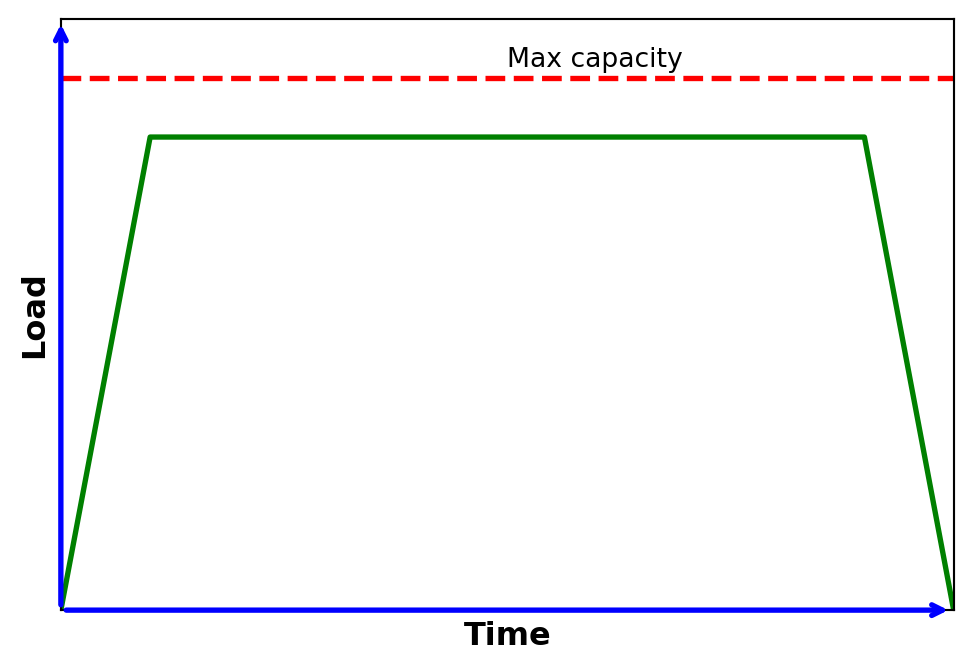
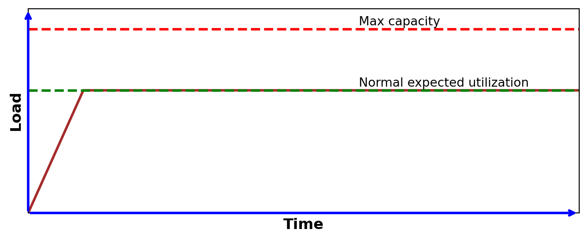
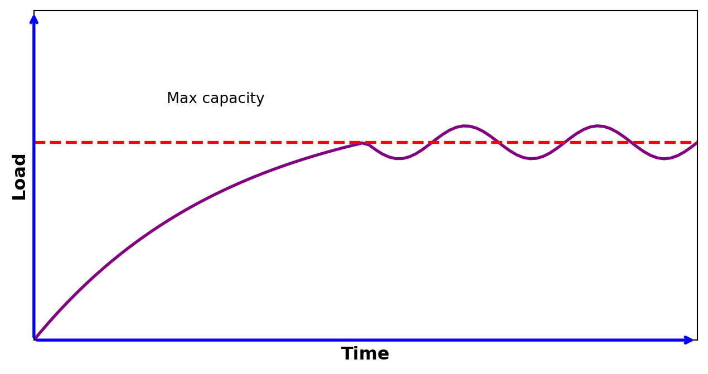
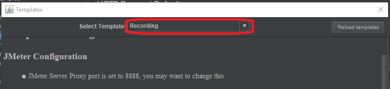
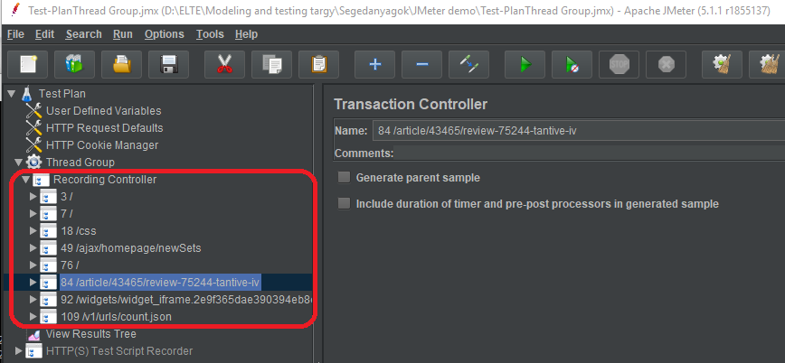
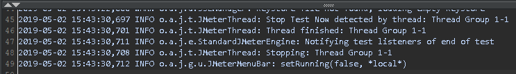
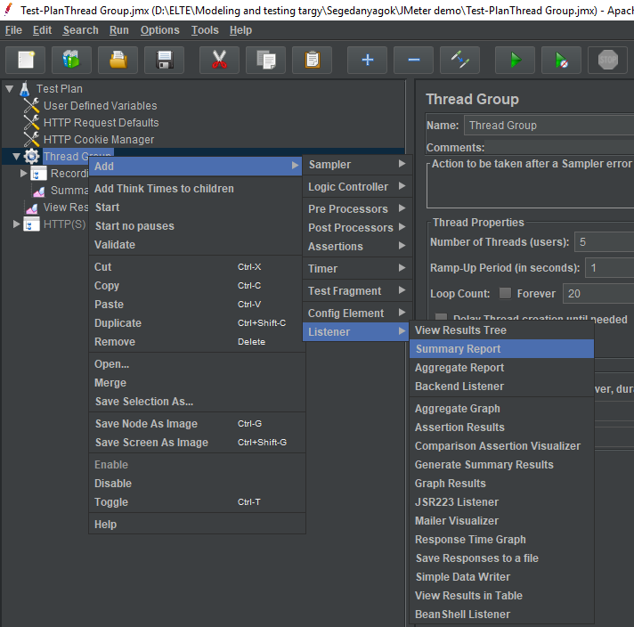
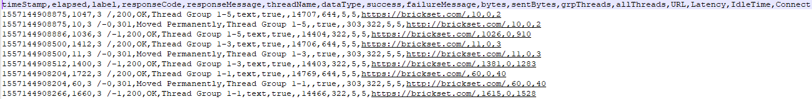
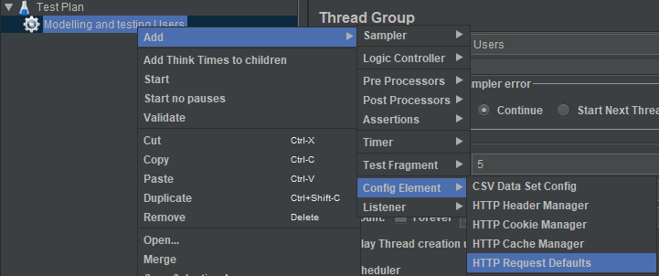
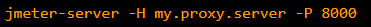

![]()

5. Performance testing
Original material
This page is a work-in-progress, the original materials can be accessed at ik-elte-sharepoint
Theory background
Performance testing
- Umbrella term, encompassing a wide range of test types
- Deals with questions related to application speed, efficiency, and stability
- Also deals with resource consumption, capacity planning and hardware sizing (e.g. memory, processors, disk space, and network bandwidth)
- Types:
- Load testing
- Endurance (stability, soak) testing
- Stress testing
- Capacity (volume, flood) testing
- Spike testing
- Scalability testing
Performance testing types
1. Load testing:
- Used to understand the behaviour of the SUT (System Under Test) under a specific expected load
- Usually applied in a controlled (laboratory) environment
2. Endurance (stability, soak) testing:
- Similar to load test, but focuses on the stability of the system over a bigger predefined time frame
- Used to verify memory leaks, thread problems, database problems, overflows / underflows…etc. that may degrade performance or cause crash

3. Stress testing:
- Used to understand the upper limits of capacity of the SUT
- Test above normal operational capacity, around max. design capacity
- (It checks if a relatively small overload on short scale can be handled by scheduling, buffering, etc.)
- Test above normal operational capacity, around max. design capacity

4. Capacity (volume, flood) testing:
- Determines whether the SUT can manage the amount of workload that was designed for
- When this boundaries are not known in advance, it benchmarks the number of users or transactions that the system is able to handle
- This can be used as a baseline for later testing
- The volume of data is increased step-by-step to analyse the actual capacity
5. Spike testing:
- Used to understand the functioning of a system if the load consumedly exceeds the max design capacity for a short time period
- Investigates whether the SUT crashes, terminates gracefully or just dismisses/delays the processing due to the sudden bursts of the requests
6. Scalability testing:
- Shows how the SUT is capable of scaling up/out/down considering some resources (CPU, GPU, memory or network usage)
- 2 approaches (both can be used to find possible bottlenecks):
- Increase the load to monitor the amount of different types of resources used
- Scaling up/out the resources of the SUT with the same level of load
Scheduling of different types of performance tests
- Load tests:
- Regularly
- Endurance tests:
- Only at major milestones (less critical systems)
- OR
- Continuously in a dedicated server (more critical systems)
- Capacity tests:
- Measure actual capacity once & retest sometimes
- Recalibrate if necessary
- Spike tests:
- Frequency depends how critical the SUT is
- Scalability tests:
- Once and apply again if we would like to increase the performance of the SUT or if the environment has been changed
- Number of measurements, reference points:
- One measurement is not a measurement!
- Multiple performance tests are required to ensure consistent findings due to the problems related to hardware and frameworks used below the measured SUT
- A baseline is also required where the measured parameters can be compared with
- The reason for this is that the SUT is not completely independent from its environment (i.e. it can be connected to a real network...etc.).
- One measurement is not a measurement!
Tools in performance testing
- 3 main functionalities:
- Load generation
- Generate a given workload to the SUT
- Performance monitoring and reporting
- Investigate some performance related aspects of the SUT
- May give an alert on lower performance conditions or detect and notify suspicious behaviours
- Create a report
- Log analysis
- Converts existing logs into the desired format, highlights data with the desired metrics…etc.
- Helps searching on existing logs
- May adds additional level of warnings and alerts to log data
Load generation – working principle
The simulation or emulation of the workload is achieved by creating virtual users that are distributed into load generators
Load generation – behaviour descriptions
4 main approaches for the behaviour description of load generation:
- Hardwired (packet-generators)
- Call-flow (traffic playback tools)
- Source code
- Model-based descriptions
These approaches scales between high performance with simple behaviour and medium performance with complex behaviour
Hardwired ( packet generators )
- Create a discrete chunk of communication in a predefined format
- Some data field of this packet can be changed, but the same for the entire load
- Pros:
- Simplest approach →
- Easy to learn
- Highest possible performance
- Simplest approach →
- Cons:
- Not flexible
- Do not handle alternative behaviours
- Example tools: Netstress, MikroTik Traffic Generator of router OS
- Create a discrete chunk of communication in a predefined format
Call - flow __ (__ traffic playback tools )
- Edit* or record an existing** traffic
- * With a call-flow editor
- ** With a network analyzer tool, like Wireshark
- Play back the given traffic many times to generate load
- Pros:
- Simple, Easy-to-read format
- Flexible approach
- Cons:
- Do not handle alternative behaviours
- Example tools: ApacheJMeter, MTS-Ericsson, LoadNinja,
- simple short code that playbacks a WireShark trace
- Edit* or record an existing** traffic
Source code
- Describe input and internal conditions and appropriate actions for them in program code
Pros:
- Flexible approach
- Can handle alternative behaviours
Cons:
- Requires programming skills both to develop and to read tests
- Maintainability could be a problem
- No abstract, high level view
Model-based descriptions
- Use formal models to describe the possible behaviour of the virtual users
- Beside the normal call-flow, alternate flows and exception flows are also considered
Possible models:
- EFSM (Extended Finite State Machine)
- Petri Nets
- Markov chains
- PTA (Probabilistic Timed Automata)
- ETA (Extended Timed Automata)
- …etc.

Performance monitoring
- Performance testing or performance monitoring tools monitor and report the behaviour of the SUT under various input conditions, such as…
- Number of concurrent users
- Frequency and distribution of requests
- The type of requests
- Different behaviours of users
- …etc.
Performance monitoring – measured parameters
- These parameters are usually monitored during a performance test execution:
- Hardware utilization:
- CPU Utilization
- Memory Utilization
- Disk utilization
- Network utilization
- Hardware utilization:
- These parameters are usually monitored during a performance test execution:
- Characteristics of the tested system:
- Response time
- Different measurable parameters: worst / best / average / 90% percentile
- Throughput rate (number of requests processed per unit time), number of handled requests _ _
- Network throughput: rate of successful data delivery over a communication channel
- Maximum throughput/bandwidth capacity: maximum rate of data transfer via a given channel
- System throughput: rate of data delivery to all terminal nodes
- Network throughput: rate of successful data delivery over a communication channel
- Rate of successfully handled requests
- What is successfully handled?
- The given request handled successfully at 1st/xth trying attempt or within a predefined time?
- Didn’t handled requests were lost, rejected for some reason or just delayed?
- What is successfully handled?
- Response time
- Characteristics of the tested system:
See GoS(Grade of Service) in telecommunication domain!
Integrate performance testing with other testing attributes
- Performance testing is not a separate testing entity, it can be integrated into other testing attributes:
- Functionality
- Example: besides working properly…
- a webshop _ should handle given number of users simultaneously_
- a given node of telecom. network should handle given number of transactions
- Example: besides working properly…
- Availability and usability
- Example: Net-bank application
- Security
- Example: DoS attacks
- flood the system to make it inaccessible/bypass auth. method/do prohibited transactions
- Example: DoS attacks
- …etc.
- Functionality
Performance testing tools – Apache JMeter
- Apache JMeter:
- Simple performance test application
- Free, open source
- Easy to use, has good documentation
- Traffic playback tool: can record an actual traffic (from browser or native application) and play back as load
- Traffic can be also generated from a manually edited call-flow
- Can handle the following applications/server/protocol types:
- Web - HTTP, HTTPS (Java, NodeJS, PHP, ASP.NET, …)
- SOAP / REST Webservices
- FTP
- Database via JDBC
- LDAP
- Message-oriented middleware (MOM) via JMS
- Mail - SMTP(S), POP3(S) and IMAP(S)
- Native commands or shell scripts
- TCP
- Java Objects
- Interfaces:
- GUI: for recording traffic and for setting, debugging and learning purposes
- CLI: for load test
- CLI: Command Line Interface, GUI: Graphical User Interface
Multi-threading framework allows concurrent sampling by many threads and simultaneous sampling of different functions by separate thread groups.

One master computer control multiple slaves to generate load to the target

Master : the system running JMeter GUI, which controls the test
Slave : the system running JMeter-server, which takes commands from the GUI and send requests to the target system(s)
Target : the webserver we plan to stress test
An overview:
Prerequisites: Install and start JMeter
Record an HTTPs traffic and playback with 5 parallel threads (users)
- Add reports and analyse measurement parameters
Create a Web Test Plan from scratch (edit call-flow manually)
Discuss briefly additional possibilities of Apache JMeter
Record an HTTPs traffic and playback with 5 parallel threads (users)
Record HTTP/HTTPS traffic using the recording template
- Select File / Templates… menu item or the click on following icon:
- Select Recording template from the drop/down list:
- Select the default parameters and press Create button
Select HTTP Request Defaults element in the generated Test Plan



Select HTTP(s) script recorder at the left and press Start button

This will start the JMeter proxy server which is used to intercept the browser requests.
- Check the ApacheJMeterTemporaryRootCA.crt certificate located in bin subfolder of Jmeter
- If this file is not generated (… java.io.FileNotFoundException : proxyserver.jks _ (Access is denied)_ __ __ error msg)
- due access right problems, then set a folder in user.properties _ _ file (under bin subfolder of Jmeter)
- where you can write:
- proxy.cert.directory=<destination folder>
- Install the given JMeter CA certificate to your browser
- In your browser instead of automatically proxy setting, select manually proxy configuration.
- Set HTTP Proxy to localhost and port to 8888 and apply this settings to all protocols
- Visit a webpage with your browser (it will be very slow…) and click on some links (while JMeter is still running) then close your browser
- Go back to JMeter, and press Stop HTTP(s) script recorder

Expand the Thread Group at the left. There should be several samples, like this:

- Select Thread Group and adjust some parameters:
- Save the TestPlan and validate it with clicking on Thread Group , then right click and Validate
- Check the right-upper corner:
- Click into to see logs:

Set the number of users, i.e. the number of parallel threads
Set the amount of time (in secs) to get to the full number of virtual users for the load test
Set how many times you want to repeat your test


- Start the given test with Run / Start menu item or with the button
- At the right-upper corner the LED and the numbers show the status of the test:
- Green LED shows that tests are running
- The numbers denotes the active threads
- At the end, the number of active threads begin to shrink
- When the test has been finished the LED turns into grey
- 0/5 denotes that there are no more active threads


Ok, good, something running, but we do not know any parameters of the target…
Add statistics Summary Report as a Listener…

Right click on Thread Group , then
Add/Listener/Summary Report
Rerun test and investigate the record during and after execution!

Also try Aggregate Report !
What is the difference between the 2 statistics?

- Understand the parameters of reports:
- Label: name of the sampler
- #Samples: Total number of requests sent to the server during the duration of the test
- Average: Average is sum of all the sample time divided by total number of requests, also called as Mean (unit: msec)
- Median: 50th percentile / 50% line: 50% of the requests were taking less than or equal to this time (unit: msec)
- 90/95/99% line: 90/95/99% of the requests were taking less than or equal to this time (unit: msec)
- Min/Max: Min/Max sample time (unit: msec)
- Std. Dev.: Standard Deviation: a measure that is used to quantify the amount of variation or dispersion of a set of data values.
- A low standard deviation indicates that the data points tend to be close to the mean (also called the expected value) of the set, while a high standard deviation indicates that the data points are spread out over a wider range of values.
- (description from wikipedia )
- Error %: Percentage of failed tests
- Throughput: Number of requests processed per unit time. Used to identify the capacity of the server (but the limitation in the capacity can be also come from the limited capacity of the load generator (i.e. the clients used for testing), as in previous example)
- Received/Sent KB/sec: self explanatory
- Avg. Bytes: Average response size
- Note that we used GUI for debugging/educational reasons, but the actual load testing should be done via CLI
- CLI: Command Line Interface, GUI: Graphical User Interface
Try Graph Results !

- Run the load test again in CLI mode
- jmeter -n -t name_of_testplan.jmx -l name_of_log.jtl
- jmeter -n -t name_of_testplan.jmx -l name_of_log.jtl -H my.proxy.server -P 8000
CLI: Command Line Interface


- Create a Web test plan from scratch! (i.e. edit call-flow manually)
- Select File / New menu option
- Adding users with the Thread Group element:
- Right click on TestPlan , then Add/Threads (Users)/Thread Group

Set the properties of Thread Group:

Set the name of the threads
Set the number of users, i.e. the number of parallel threads
Set how long to delay (in secs) between starting each user
Set how many times you want to repeat your test
Add HTTP Request elements properties:
Set the name of the webserver where all HTTP requests
will be sent to ( brickset.com in the current example)
Note that this is just the setting of defaults that HTTP
request elements use, it does not send HTTP elements itself
(it will be done in step 7).

Right click on Users group,
then Add/Config Element/HTTP Request Defaults

- Add HTTP cookie manager
- Right click on Users group, then Add/Config Element/HTTP Cookie Manager
- This will ensure that each thread gets its own cookies
- Adding HTTP request
- We will add 2 HTTP requests:
- Going into the home page
- Going into a subpage
- We will add 2 HTTP requests:
- Add reports to the TestPlan!
- Right click on Thread Group ,
- then Add/Listener/
- Validate TestPlan
- Right click on Thread Group ,
- then Validate


What we did not tried in this demo, but may worth to check 2/1:
Discover the possibilities of CLI mode (full list of options)
Testing of other protocols, types of load (like testing a database, an FTP site, an LDAP server, a webservice…etc)
Distributed testing: handle multiple slaves that generates the same/different load



What we did not tried in this demo, but may worth to check 2/2:
Handle listeners, create own statistics
Pattern matching with regular expressions
...etc.